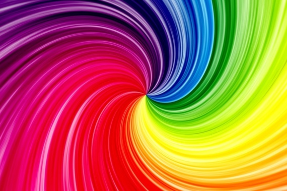

Як кольори в інтер'єрі впливають на стан людини

Колір — це набагато більше, ніж просто декор, це потужний інструмент
дизайну , який може трансформувати простори та впливати на наші психологічні та фізіологічні реакції . Коли ми розуміємо науку психології
кольору , ми можемо створювати середовища, які підтримують наші емоційні потреби, підвищують нашу продуктивність та покращують наше загальне самопочуття.
Сприйняття простору: Колір може змінювати те, як ми сприймаємо розмір і відкритість кімнати:
- Світлі кольори: Такі кольори, як білий або світло-пастельний, відбивають більше світла, що робить маленьку кімнату більшою та відкритішою.
- Темні кольори: Темні відтінки можуть зробити кімнату затишнішою та інтимнішою. Вони поглинають світло, додаючи простору тепла та глибини.
Функціональність і призначення:Вибір правильних кольорів може допомогти кімнаті краще функціонувати:
- Робочі простори: Кольори, такі як синій і зелений, допомагають зосередитися та заспокоїтися, що робить їх ідеальними для офісів або навчальних зон.
- Соціальні зони:Яскраві та теплі кольори можуть сприяти взаємодії та енергії, роблячи їх придатними для вітань, їдалень та інших місць для збирання людей.
Візуальна гармонія: Колір допомагає створити збалансований і приємний вигляд:
- Кольорові схеми: Використання послідовної палітри або комплементарних кольорів може зробити кімнату більш цілісною та візуально привабливою.
- Акценти Додавання яскравих кольорів або контрастних відтінків може привернути увагу до конкретних особливостей і створити акценти в кімнаті.

Колір відіграє ключову роль у формуванні атмосфери гостинних просторів, глибоко впливаючи на емоції та поведінку.
В інших розділах наведено огляд того, як різні кольори часто використовуються в інтер'єрному дизайні та їхній психологічний вплив.